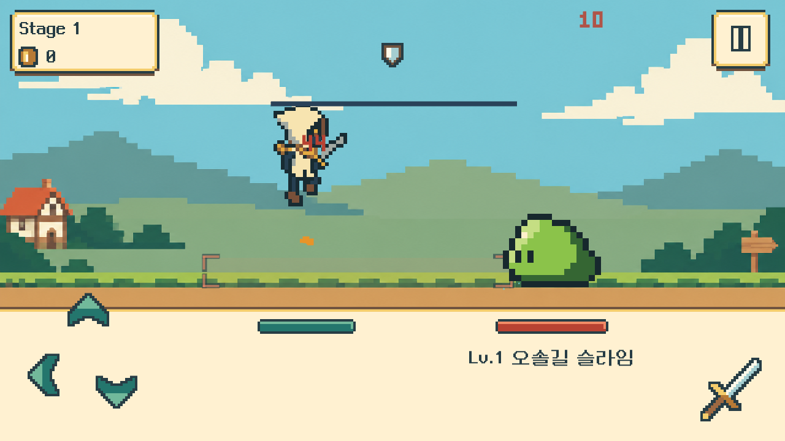
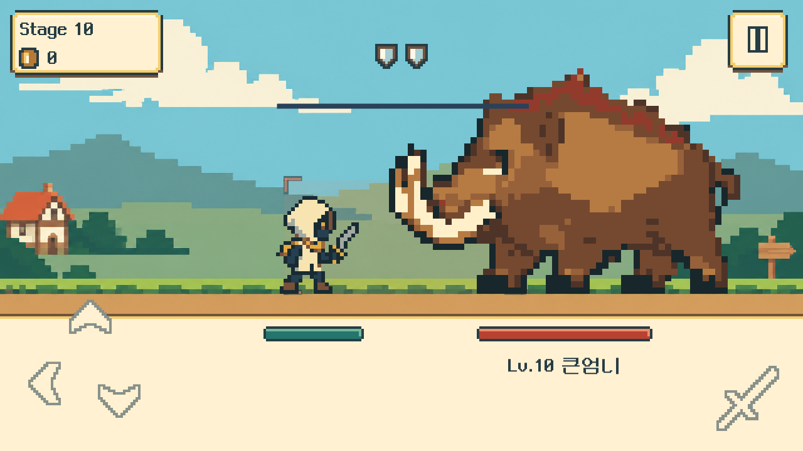
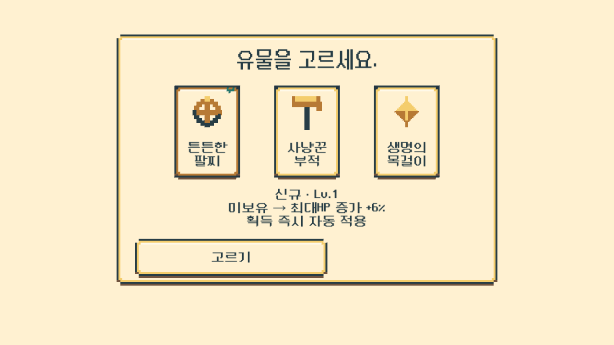
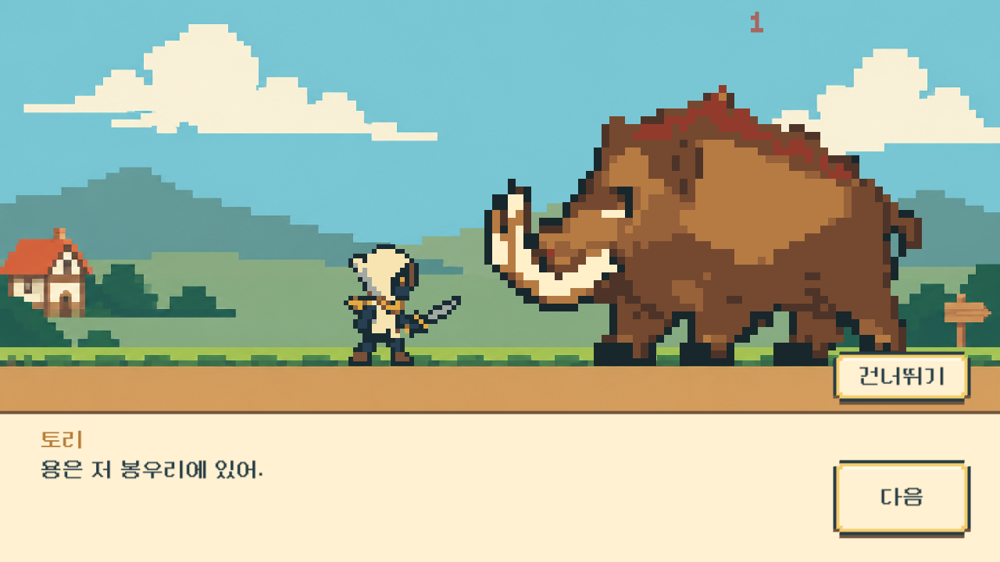
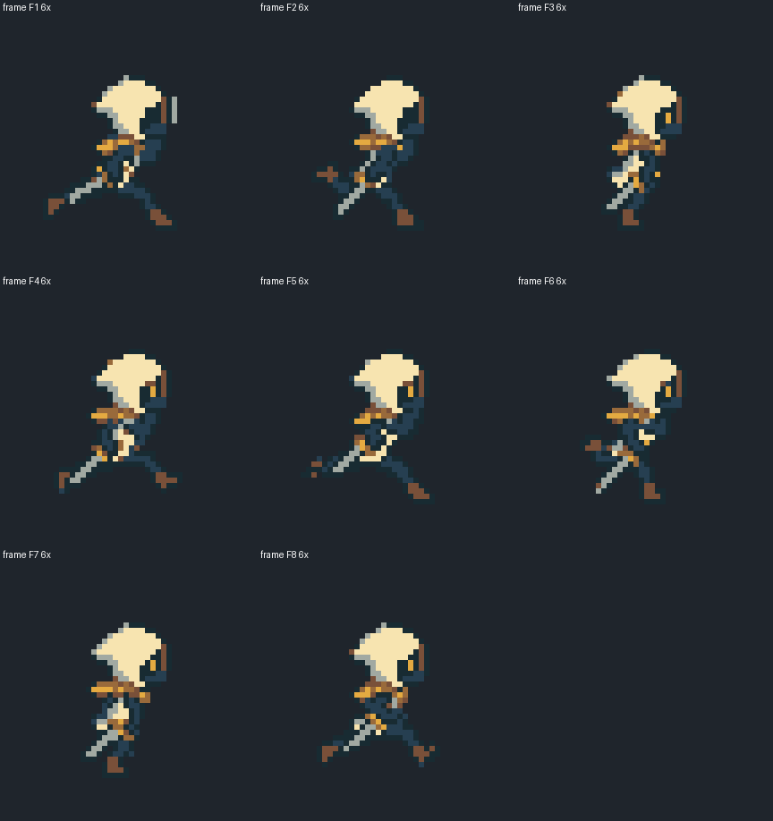
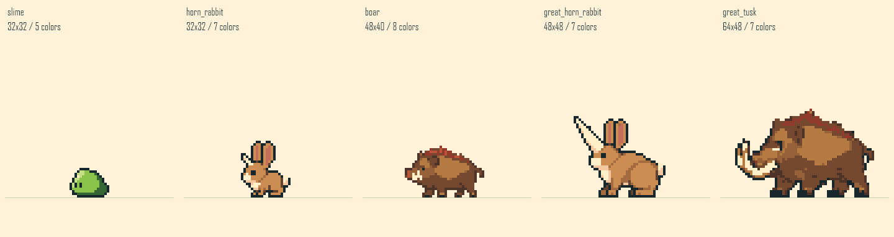

실제 제작 범위
온 한 명과 1–10 새 적·배경·UI. 토리는 보스 뒤 대사의 화자로 등장합니다. NPC의 별도 등장 배우와 11–50 새 구역은 후속 제작 범위입니다. 기존 11–20 전투·진행도는 유지합니다.
이전 제작 기록 · DRAGON V1 / 0.9.0
방향키는 레퍼런스의 위치로 옮기고, 위·뒤 회피와 아래 쳐내기는 그대로 유지합니다. 검사 온, 일반 몬스터 3체형, 전용 보스 2체형, 초원과 도트 UI를 저장된 Unity 씬·프리팹에 적용했습니다.
이전0.9.0: Unity 적용·일반 Windows 빌드 완료. 자동 흐름 검사와 대표 화면 QA 통과. 초기 검사 뒤 유물 카드 가림·긴 이름 겹침을 수정하고 해당 부분만 다시 확인했습니다. OS 마우스·키보드 실입력과 모바일 실기기 검사는 아직 진행하지 않았습니다.
Windows 실행 파일 · 전체 실행 묶음 ZIP · 약46MB · 빌드·ZIP 검증 기록
다른 위치에서 실행할 때 ZIP 전체를 풀고 Dragon-v1 폴더 안의 LastBellMvp.exe를 실행합니다. exe 옆의 데이터·DLL 폴더가 함께 필요합니다. 아래 캡처는 같은 게임 소스의 관측 빌드에서 수집했으며, 일반 전달 빌드에는 관측 코드가 없습니다.






온 한 명과 1–10 새 적·배경·UI. 토리는 보스 뒤 대사의 화자로 등장합니다. NPC의 별도 등장 배우와 11–50 새 구역은 후속 제작 범위입니다. 기존 11–20 전투·진행도는 유지합니다.
아래 화살표는 쳐내기, 검 버튼은 공격입니다. 기존 회피·명중 타이밍과 성장을 유지합니다. 중간 보스 보석0, 보스 보석4이며 유물 후보는 보스 처치 시 보관한 뒤 도전 종료 정산에서 고릅니다.
승인한 초원 원본을 먼 배경·지면으로 나눠 이동 차이를 줍니다. UI 아이콘45개와 도트 HP·패널을 연결했습니다. 로비는 밝은 양피지 UI이며 전용 여관 배경은 아직 제작 전입니다.
Unity 적용 기록 · 아트 연결·공유 내역 · 플레이어 아트 검토 · 몬스터 아트 검토 · 통합 QA 기준 · 실제 QA 결과·미검증 범위